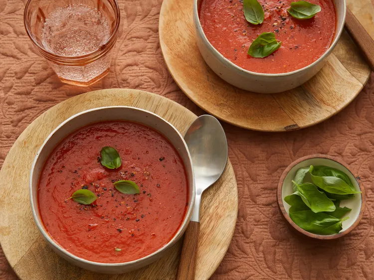

Simple Tomato Soup

Have a craving for tomato soup but no cans of soup in the cupboard? If you have canned tomatoes, you are 30 minutes away from fresh, homemade soup that cries out for a grilled cheese for dunking. This is so easy to make, you may never go back to canned tomato soup again.
Allrecipes member Cindy P says this is "very easy, quick and delicious especially with Parmesan cheese sprinkled on top. I added a can of northern beans for more protein. Will be making this again and again."
Ingredients
- 3 tablespoons olive oil
- 1 onion, chopped
- 2 cloves garlic, minced
- 2 teaspoons minced fresh ginger root
- 1 (15 ounce) can chickpeas, drained
- 1 (14.5 ounce) can diced tomatoes
- 1 (14 ounce) can coconut milk
- 1 sweet potato, cubed
- 1 tablespoon garam masala
- 1 teaspoon ground cumin
- 1 teaspoon ground turmeric
- ½ teaspoon salt
- ¼ teaspoon red chile flakes
- 1 cup baby spinach
Steps
- Heat oil in a skillet over medium heat. Cook onion, garlic, and ginger in hot oil until softened, about 5 minutes. Add chickpeas, tomatoes, coconut milk, and sweet potato. Bring to a boil, reduce heat to low, and simmer until tender, about 15 minutes.
- Season with garam masala, cumin, turmeric, salt, and chile flakes. Add spinach right before serving.
Home